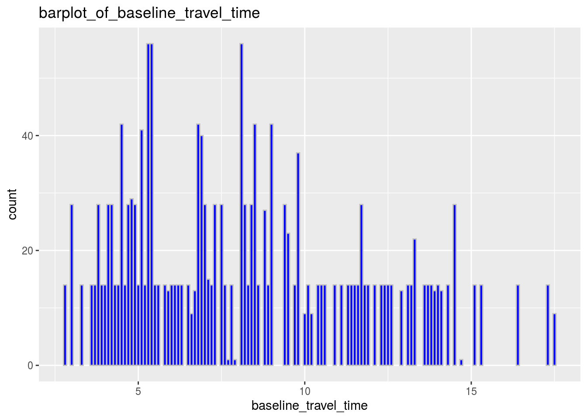
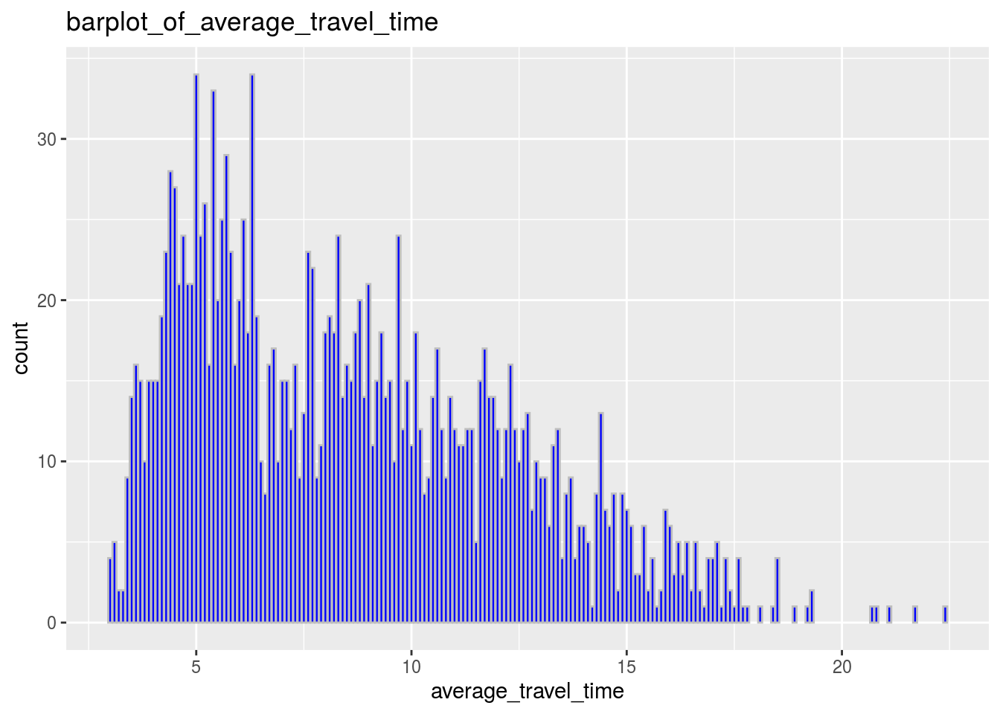
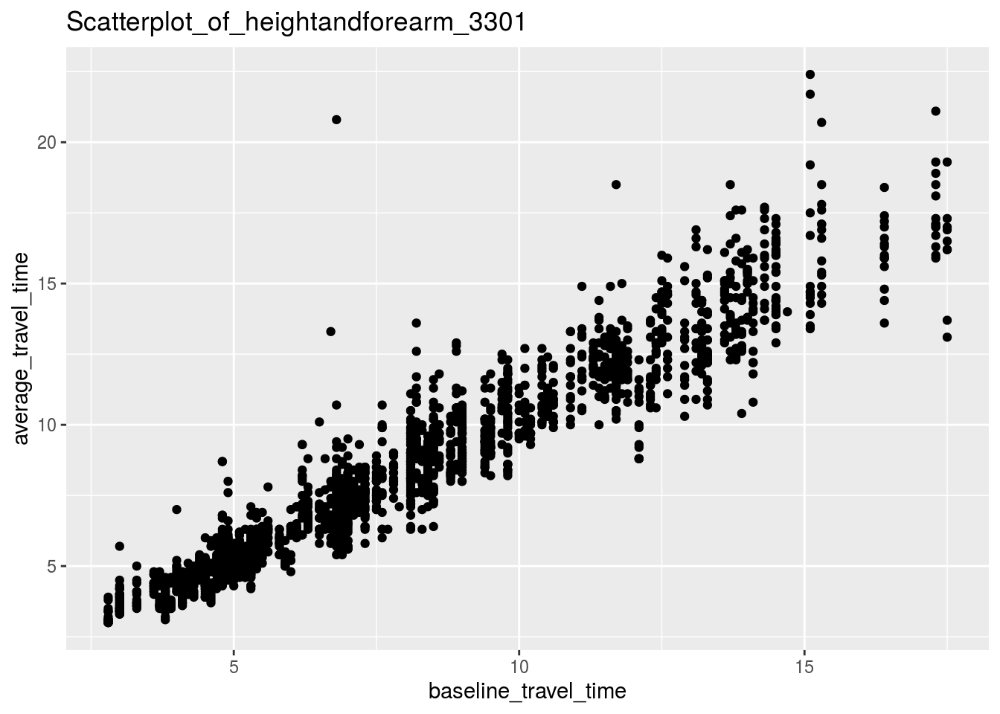

#Abstraction
The Bluetooth installed in the King St. Transit Pilot study area collects the information about the transportation details. The baseline travel time and the actual average travel time are the two variables which are closely related. The average travel time, which is the response variable, is going to change as the independent variable, which is the baseline travel time, changes. We use Wickham et al. (2019) We use Wickham, Hester, and Francois (2018)
#Introduction
The dataset used for this assignment is from the Toronto Open Data Portal. This dataset includes the information about the transportation details. It is collected by bluetooth sensors installed in the King St. Transit Pilot study area. This pilot is built on Sunday, November 12, 2017 between Bathurst Street and Jarvis Street. The purpose of it is to ease the traffic pressure caused by private vehicles, improve the transportation capacity and also reduce the air pollution to a certain extent. This was created to find out how much time the citizens need to use on transportation through this pilot. The data is averaged into a 5 minute snapshot. The major finding is that as the baseline travel time increases, the average travel time also increases.
First, I plotted two bar-plots about the baseline travel time and the average travel time with their corresponding counts. Then, I used the two variables to create a scatterplot to see the relationship between them. The first two bar-plots are all right-skewed which means that most people spend 20 to 50 minutes on this public transportation(45 and 105). Also, the two variables are in linear relationship. The baseline travel time is the explanatory variable, which is the stated time it takes to travel and the average travel time is the response variable, which is the average time of how long each person actually takes. This means that the average travel time depends on the baseline time and it is going to change as baseline time changes. Under this condition, we can notice that in general, the response variable increases as the independent variable increases.
In general, those two variables are closely connected. One of the variables changes, another one is supposed to change. However, the data might not accurate due to the inaccuracy of the Bluetooth. This problem might get much better with the installation of one more Bluetooth.
#Data The dataset is searched from the Toronto Open Data Portal and it includes the transportation information collected bybluetooth sensors installed in the Kind St. Transit pilot study area.
baseline_time <- ggplot(data=bluetooth_travel_time_summary,
mapping=aes(baseline_travel_time)
)+geom_bar(stat="count",
color="grey", fill= "blue")+labs(title = "barplot_of_baseline_travel_time")
baseline_time
average_time<- ggplot(data=bluetooth_travel_time_summary,
mapping=aes(average_travel_time)
)+geom_bar(stat="count",
color="grey", fill= "blue")+labs(title = "barplot_of_average_travel_time")
average_time
summary(bluetooth_travel_time_summary)
## _id month street direction
## Min. : 1.0 Length:1822 Length:1822 Length:1822
## 1st Qu.: 456.2 Class :character Class :character Class :character
## Median : 911.5 Mode :character Mode :character Mode :character
## Mean : 911.5
## 3rd Qu.:1366.8
## Max. :1822.0
## from_intersection to_intersection day_type time_period
## Length:1822 Length:1822 Length:1822 Length:1822
## Class :character Class :character Class :character Class :character
## Mode :character Mode :character Mode :character Mode :character
##
##
##
## baseline_travel_time average_travel_time
## Min. : 2.800 Min. : 3.000
## 1st Qu.: 5.300 1st Qu.: 5.500
## Median : 7.800 Median : 8.150
## Mean : 8.272 Mean : 8.659
## 3rd Qu.:10.900 3rd Qu.:11.300
## Max. :17.500 Max. :22.400- The two variables that we focus on are the baseline travel time and the average travel time. These two histograms are both right-skewed and they demonstrate the amount of time of the baseline and the actual average time the public citizens use. Also, after summarizing the data, we can see that the mean for the baseline travel time is about 8.27 and the spread of this variable is 5.6 (10.9-5.3). For the other variable, which is the average travel time, its mean value is about 8.66 with 5.8 (11.3-5.5) as its spread value.
ggplot(bluetooth_travel_time_summary, aes(x=baseline_travel_time,y=average_travel_time))+geom_point()+ labs(title="Scatterplot_of_heightandforearm_3301") - The scatterplot shows the relationship between the two variables. The baseline travel time is the explanatory variable and the average travel time is the response variable under this situation. This means that the average travel time depends on the baseline time and it is going to change as baseline time changes. Under this condition, it is obvious that these two variables are generally positive correlated, which means that the response variable increases as the independent variable increases.
#Discussion - The main finding of my survey is that the actual average travel time is not exactly the same as the baseline travel time and there exists measurement errors. However, there is no doubt that the average time, which is the response variable, depends on the independent variable (baseline travel time).
#Weakness and next step
- Weaknesses of this data are that there might exist measurement error. When the response of the Bluetooth is slightly slow, it will affect the data. It is good to install more Bluetooth and take the average, then the data can be more accurate.
#References
Wickham, Hadley, Mara Averick, Jennifer Bryan, Winston Chang, Lucy D’Agostino McGowan, Romain François, Garrett Grolemund, et al. 2019. “Welcome to the tidyverse.” Journal of Open Source Software 4 (43): 1686. https://doi.org/10.21105/joss.01686.
Wickham, Hadley, Jim Hester, and Romain Francois. 2018. Readr: Read Rectangular Text Data.